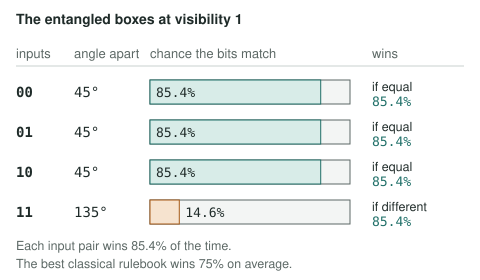
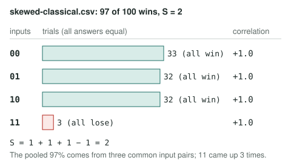
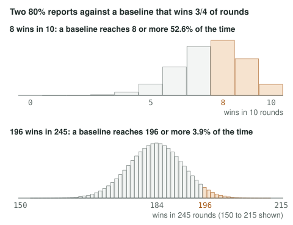
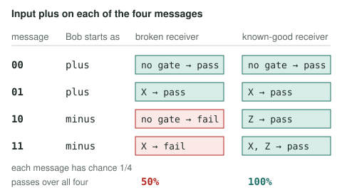
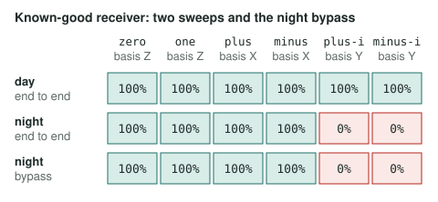

Test a quantum link
Use Python to check the pair source, then find out whether its receiver delivers the right state. Run each command from courses/quantum-link-lab in your Free to Learn clone. Open worked examples when you want a hint.
Score a single round
Before you touch the starter, run the finished tool once. You’ll write three scoring functions: one decides whether a round wins, one scores how well the answers agree within each input pair (its correlation, from −1 to +1), and one combines those four correlations into a Bell score. Lesson 02 builds the last two. The parser, random sampler, and terminal formatting are supplied. An answer can be typed, adapted from the worked example, or written with help. The same tests apply to all three routes. Expect 45–75 minutes for the whole build as a first estimate.
Terminal commandpython3 lab.py demo
Read the first line of each report. Two describe simulations run on your machine. The third replays counts from a 2015 experiment at Delft that separated two electron spins by 1.3 km. A single simulation can land above or below its expected win rate. Even the classical simulation, whose expected win rate is 75% (the section on 75% below shows why), can beat 75% on a short run with lucky inputs.
Put the rule in code
Open starter.py. Its three unfinished functions feed the same reporter you just ran. The first, wins(x, y, a, b), sees two inputs (x,y) and the answers (a,b). The rule: Alice and Bob each get one input bit and give one answer bit, and they cannot confer once the inputs arrive: each box sees only its own input. They win when their answers match, except on input 11, where they win when the answers differ. Take the test case (1, 1, 0, 1): both inputs are 1, so the answers need to differ. They do. Swap Bob's answer to 0 and the same round loses.
Replace the body of wins so it returns True for a win and False for a loss for every combination. A common bug is to win whenever the answers match. Check your implementation before opening the worked lines.
Terminal commandpython3 -m unittest learner_checks.Game
See a working implementation
Score the roundexamples/scorer.py · gamePut this function in starter.py.
def wins(x, y, a, b):
need_different = x == 1 and y == 1
return (a != b) == need_different
need_different is True only on 11, and a != b is True when the answers differ. The round wins when the two booleans agree: both True on 11, both False on any other input pair.
Where does 75% come from?
Give Alice two answers, one for each input. Do the same for Bob. Try to make all four input pairs win at once. To win on 00, Alice’s first answer must equal Bob’s first. To win on 01 it must also equal Bob’s second. Winning on 10 ties Alice’s second answer to Bob’s first. That leaves all four answers equal, but 11 requires different answers. Always answering zero wins three cases, so three out of four is achievable. When the four input pairs are equally likely, even picking a different rulebook at random each round (a rulebook is Alice's two answers plus Bob's two answers) cannot improve that average.
Use your own scorer to check every rulebook. Run python3 in the course folder, then enter these lines. In the loop, a[x] and b[y] deliberately allow each player to see only their own input. Predict the largest score before printing it.
Pythonfrom itertools import product
from starter import wins
cards = list(product((0, 1), repeat=2))
scores = [sum(wins(x, y, a[x], b[y]) for x, y in cards)
for a in cards for b in cards]
print(max(scores), "of 4")
Where do the quantum answers come from?
For a classical control, the boxes share a random bit and both report it for every input. This produces streams that look random on either side and match perfectly across the link. The quantum simulator prepares two qubits in a shared state called a Bell pair; the h and cx lines printed at the end of this lesson build it. Each input now chooses the angle of a measurement: Alice measures at 0 degrees for input 0 and 90 for input 1, Bob at 45 for input 0 and −45 for input 1. The chance the two bits match is (1 + cos(angle difference)) / 2 for this pair; equal_probability in lab.py computes it. For input 11 the angles are 135 degrees apart. A match becomes unlikely, exactly where the game rewards different answers.
Run both cases below. Before the second, predict the win rate when the visibility is zero. Visibility sets how the simulator mixes two sources: that fraction of the answers follows the ideal pair, and the rest are independent random answers.
Terminal commandpython3 lab.py simulate --model entangled --seed 7 --visibility 1
python3 lab.py simulate --model entangled --seed 7 --visibility 0
Check the prediction
Two independent fair bits match half the time and differ half the time. Either kind of round therefore has a 50% chance of winning when visibility is zero. Perfect visibility gives about 85.36% in expectation. A seeded run lets you compare the same experiment after a code change.

Print an actual circuit
A circuit is a list of operations for a quantum processor. This command prints the circuit the entangled simulator uses for inputs 11.
Terminal commandpython3 examples/measurement.py 1 1
Read h then cx. h puts the first qubit into an equal superposition of 0 and 1: read as a bit at this point, it would give either result with equal probability. cx flips the neighboring qubit for the 1 part of that superposition. Together these instructions prepare the pair. The two ry lines rotate the measurement axes before each qubit is read as a bit; each rotates by minus that qubit's measurement angle, so Alice's input 1 prints ry(-pi/2). Change the second argument to 0 and see which line changes. The output is OpenQASM 2 and can be imported into a compatible circuit tool. The local sampler calculates the outcome probabilities directly. The real Delft apparatus used electron spins and its own control hardware.
Break your metric
The next capture comes from boxes that always report zero. The reporter says they won 97 of 100 rounds. Write down one way that could happen and name the row you'd inspect to check it. Then run the reporter.
Terminal commandpython3 lab.py replay fixtures/skewed-classical.csv
Check your diagnosis against the measured rows
Input pair 11 came up only three times, and both boxes answered zero each time. The other 97 trials were on 00, 01 or 10, where matching answers win.

A pooled win rate weights frequent questions more heavily. To compare the four kinds of question on equal terms, give each of the four possible input pairs its own score, then combine those four numbers.
Give each setting its own count
For the trials of one input pair, score every matching answer as +1 and every opposite answer as −1. The average is called its correlation. If 3 out of 4 answers match, the sum is 1 + 1 + 1 − 1 = 2 and the average is 0.5. Correlation ranges from −1 (always opposite) to +1 (always equal).
In starter.py, implement correlation(equal, total). Raise ValueError when the group has no trials. A zero correlation means the two outcomes balanced out over observations. An empty group gives you no observations.
Terminal commandpython3 -m unittest learner_checks.Correlation
See the normalization
One setting, one averageexamples/scorer.py · corrPut this function in starter.py.
def correlation(equal, total):
if total == 0:
raise ValueError("No trials for this setting")
opposite = total - equal
return (equal - opposite) / total
Combine four settings
The Bell score used here, called S, adds the correlations for 00, 01 and 10, then subtracts the correlation for 11. The last sign rewards different answers. Four always-matching groups produce 1 + 1 + 1 − 1 = 2. The same calculation on the ideal entangled model gives about 2.83. Sampling error can move the observed number. Under the Bell test's assumptions, no classical strategy has an expected S above 2. Those assumptions include that the stations cannot communicate during a round and that their settings are chosen independently of the source.
Write chsh(by_setting) using the four keys (0,0), (0,1), (1,0), (1,1). Then run your reporter on the skewed stream. Its 97% and its S of 2 should now sit beside each other.
Terminal commandpython3 -m unittest learner_checks.Bell
python3 starter.py replay fixtures/skewed-classical.csv
See the signed sum
Combine the four correlationsexamples/scorer.py · witnessPut this function in starter.py.
def chsh(by_setting):
return by_setting[0, 0] + by_setting[0, 1] + by_setting[1, 0] - by_setting[1, 1]
Predict what should happen if every trial with input pair 11 disappears from the file. Run python3 starter.py replay fixtures/missing-setting.csv. If your own analysis silently substitutes zero for the missing term, it can report a convincing S of 3 for two boxes always saying zero. An error naming the missing setting is the usable result here.
Report what happened in Delft
In 2015, researchers separated two electron spins by 1.3 km, chose local measurement settings, and recorded 245 eligible trials. Figure 4a of their paper (linked below) reports how often the answers agreed and disagreed for each pair of settings. Those eight counts are the measured input to your reporter. The file contains neither individual timestamps nor the individual answers. Delft experiment and physical protocol
Terminal commandpython3 starter.py replay fixtures/delft-2015.csv --uniform-null
Read the row for 11 first. Ten pairs matched and 41 differed. Which number contributes to wins? For 00 the roles reverse: 46 matched and seven differed. Use the other two rows to check the total by hand. Your reporter should recover 196 wins in 245 trials and S near 2.42. If you get anything other than 196 of 245 or an S near 2.42, fix the reporter before you explain the physics.
How surprising is 80 percent?
Imagine two reports, one with 8 wins out of 10, the other with the 196 out of 245 you just counted. Both say 80%. A classical strategy that wins each independent, fair-settings round with probability 0.75 has about a 53% chance of reaching at least eight in ten. Its chance of reaching at least 196 in 245 is about 3.9%. The tail probability asks how often that baseline reaches a result this high or higher. It doesn't give the probability that the equipment is classical.

The --uniform-null flag computes this tail probability against a 0.75 baseline, assuming a fixed trial count, no communication between the stations, and fresh, uniformly random settings independent of the devices. Use it when you can justify those assumptions. The deliberately skewed fixture breaks the setting assumption, so its tail would mislead. The paper documents the trial-selection rule, timing, measurement choices and a statistical treatment of possible device memory. A spreadsheet of counts cannot establish how the lab chose which trials to keep. Methods and statistical analysis
Capstone: take the next shift
Another operator changed the readout electronics and handed you handoff.csv, a constructed calibration run. This time the settings were balanced. Before running your tool, write down which three rows should favor matching answers on a healthy link and which row should favor opposite answers. Save your prediction and any help used in your own lab notes.
Terminal commandpython3 starter.py replay handoff.csv --json
Deliver the JSON and a short operator note. Identify the pattern that deserves investigation, give two possible causes, and choose a follow-up measurement that would distinguish them. What can you conclude from this file alone? Keep the original data, your first judgment, and any revision. Silently changing labels after looking at the score invalidates a confirmatory test.
Compare your handoff after you have written it
01 and 11 have signs opposite to the predicted pattern. Both use Bob's setting 1. A convention error in that readout is one explanation. The table alone cannot assign blame to the electronics. Calibrate Bob independently at setting 1: use known preparations for each of its two expected outcomes and check which outcome his readout reports. Document the setting or label correction if warranted. Write down the calibrated label convention before collecting a fresh run, then score every eligible trial using that convention. Relabeling the old rows gives S = 2.84. That finite-sample score can exceed the ideal expected 2.83. You chose the relabeling after seeing these data, so use the old rows only to form the hypothesis.
Stretch: set an operating threshold
Use the entangled simulator to predict the visibility at which its expected S falls to 2. Sweep three visibility values on each side of it with fresh, prespecified seeds. Report the spread and choose what you would measure next near the boundary. The simulator multiplies all four ideal correlations by visibility, so work out your threshold before looking at the samples. Quantum strategy and its ideal score
The green link that loses a qubit
Two smoke tests send a 0 and a 1. Both pass. The pair source also passed a Bell check on separate pairs. A caller still reports that the receiver delivered a different state from the one sent. Your job is to find an input that reproduces the loss, then trace it to the receiver.
Start at the interactive receiver bench. On a computer, run the commands below from courses/quantum-link-lab. Everything runs locally with Python 3.10 or later. The course design allows about 25 minutes for the repair and another 20 for the night shift.
To reproduce the two green checks from the terminal, use these commands. The first checks a batch of 4,096 simulated calibration pairs. The second exercises the receiver with fresh pairs. The receiver check sends only 0 and 1; neither command asks it to deliver the plus state introduced below.
Terminal commandpython3 lab.py simulate --model entangled --seed 7
python3 teleport/bench.py sweep --receiver learner --states zero one
What the link promises
Imagine the caller hands Alice a qubit without telling her how it was prepared. Bob should end up with that same state. Alice and Bob first share a fresh entangled pair. Alice combines the caller’s qubit with her half, measures both, and sends the two resulting ordinary bits to Bob. Those measurements consume the input and the shared pair. Bob uses the bits as instructions for his half. Each of the four messages is equally likely for every input. The message alone gives him no description of the caller’s state. Teleportation circuit and correction table
A tester gets one privilege the receiver doesn't: it knows which state it prepared. It can choose a measurement that the correct state should pass with certainty. To test again it prepares a new qubit. The term pass probability below means the chance of recovering the expected measurement result. Percentages in the bench are calculated over the possible messages and measurements of an ideal circuit.
Pick an input that sees the fault
Start with the familiar 0 and 1. Now try plus. The plus and minus states both yield a fair coin when measured as 0 or 1. They differ in relative phase: the two amplitudes that make up the qubit have the same sign in plus and opposite signs in minus. Those signs affect how amplitudes add when you change the measurement. Apply the gate called H just before reading a bit: plus becomes 0 and minus becomes 1.
Write your prediction first. If Bob gets minus when the tester sends plus, what happens when the tester measures in that plus/minus basis? Run the full sweep to see which of the six probes expose the fault.
Terminal commandpython3 teleport/bench.py sweep --receiver learner
The two other probes, plus-i and minus-i, put the second amplitude a quarter turn ahead or behind the first. They supply a third way to check the qubit. The six probes form three pairs, 0/1, plus/minus and plus-i/minus-i, one per axis; 0 and 1 alone cannot catch a phase error, and plus and minus alone cannot catch one that only touches the quarter-turn states plus-i and minus-i.
Trace one message
Keep the input fixed at plus. The left message bit requests a phase correction (Z). The right bit requests a flip (X). Compare the faulty receiver against a known-good one with the same measurement branch. A trace shows what happens for one possible two-bit message. On hardware you would collect many runs and then group them by the message Alice sent.
Terminal commandpython3 teleport/bench.py trace --receiver learner --state plus --bits 10
python3 teleport/bench.py trace --receiver ideal --state plus --bits 10
Walk through message 10
On this branch Bob starts with minus. Message 10 requests Z only. Applying Z reverses the sign on the amplitude of 1, turning minus back into plus. Skip Z and the verifier reads the opposite outcome every time on this branch. There are four equally likely messages. Ignoring the phase bit spoils the two with a leading 1 for this probe, so the pooled result is 50%. For the state 1, Z changes only an overall sign; the verifier still sees 1 with certainty.
Own the receiver
Open teleport/receiver.py. The supplied harness constructs and measures the circuit and sends your corrections(phase, flip) function the two classical bits. It expects a tuple of gate names in the order to apply them. Capture the failing check before editing.
Terminal commandpython3 teleport/learner_checks.py
Keep the existing bit-flip behavior. Add the missing response to the phase bit. Try writing it from the trace, use the worked function below, or brief an agent with the contract above (corrections(phase, flip) returns gate names in the order to apply them). Record which route you used. Run the check again, then ask your receiver to handle all six preparations. Keep the faulty comparison available through --receiver broken.
Show the complete function to place in teleport/receiver.py
Turn two message bits into Bob’s correctionsexamples/recover.py · receiverReplace corrections in teleport/receiver.py. Gates run from left to right.
def corrections(phase, flip):
gates = []
if flip:
gates.append("X")
if phase:
gates.append("Z")
return tuple(gates)
On 00 the tuple is empty. On 11 both operations are necessary for an unknown state.
Here is input plus through every message, with the supplied faulty receiver beside the worked one:

Terminal commandpython3 teleport/learner_checks.py
python3 teleport/bench.py sweep --receiver learner
All six preparations should now pass on all four branches. A green Bell check tests the source, a 0/1 smoke test checks two preparations, and this end-to-end sweep exercises the correction path. For your day-shift handoff, save one failing trace and its repaired counterpart.
A six-state test on a physical teleporter
Pfaff and colleagues sent the same six kinds of input through a teleporter between distant qubits. They reported mean fidelity (agreement with the target state) of 0.50 ± 0.03 with the classical-message corrections turned off and 0.77 ± 0.03 with them enabled. Their disabled condition removes both corrections. Our simulated bug drops only the phase correction: two states pass with probability 1 and four pass with probability ½, for a six-state mean of ⅔. After the repair its mean is 1. The experimental uncertainties describe measurements on their apparatus. Experimental results, Fig. 4
Take the night shift
The receiver you repaired is still in service. At the shift change, a second station, the night station, reports failures. Your deliverable is a regression test, a repair, and a trace another engineer can reproduce. Keep your first diagnosis and any later revisions in a local note. Put the most care into the Python regression test: the next engineer reruns it tomorrow to reproduce the failure.
Triage before editing
Run the same repaired receiver at the two stations. If you started here, use the supplied --receiver ideal checkpoint in place of --receiver learner in both commands.
Terminal commandpython3 teleport/bench.py sweep --receiver learner
python3 teleport/bench.py sweep --receiver learner --station night
Which preparations fail? Pick one. Compare that input on two different message branches using trace with --station night. Write down one possible fault in delivery and one in verification. Choose a control whose result would rule out one of those two faults.
A control available from the bench
python3 teleport/bench.py calibrate --station night directly prepares the known states at the verifier. This bypasses Alice, the pair, the message and Bob’s correction. Compare the failing and passing preparations with the end-to-end sweep. If a preparation still fails with this bypass, the night verifier's readout is faulty, whatever else may also be wrong upstream.

Before reading the repair instructions, save one trace and write down which part of the system you would change. Name one observation that would have led you to a different part.
Locate the editable code and the regression harness
Open teleport/incident_regression.py. Its check(probe) function can call probe(state_name) to get a verification probability for a directly prepared state. Pick a revealing input and a passing control from your own results. Assert the expected probabilities for a healthy station. Look for values close to 1, allowing for floating-point roundoff. Capture the failure before changing the station.
Terminal commandpython3 teleport/incident_regression.py
Inspect teleport/night_shift.py. For the chosen measurement basis, trace the gates in order as they rotate the state, then check which bit the detector reads. Repair the smallest operation your evidence supports. Keep the state preparation and the expected outcome fixed. Changing both can make a broken verifier agree with itself.
Gate reference if you need it
A qubit with amplitudes (a, b) becomes (a, i × b) under S and (a, −i × b) under Sdg. H sends plus to 0 and minus to 1. In this code the first gate in a returned tuple acts first. To work out a readout by hand, start with a prepared state, apply each gate in order, then read the bit. The two opposite preparations in a basis must produce opposite labels.
Run your regression again. The harness also runs your check against the original faulty station. A test that passes on both leaves the incident undetected. After the repair, rerun the six-state sweep to check the other preparations; if you used the ideal checkpoint, use --receiver ideal in the last command below.
Terminal commandpython3 teleport/incident_regression.py
python3 teleport/bench.py calibrate --station night
python3 teleport/bench.py sweep --receiver learner --station night
Hand over four things: the two diagnostic commands and what differed, your short explanation of the responsible component, the patch, and the regression that rejects the old behavior. Include a passing control that helped you rule something out. The target is a test another person can run on an unmodified copy of the faulty station and see fail on your revealing input while your passing control still passes.